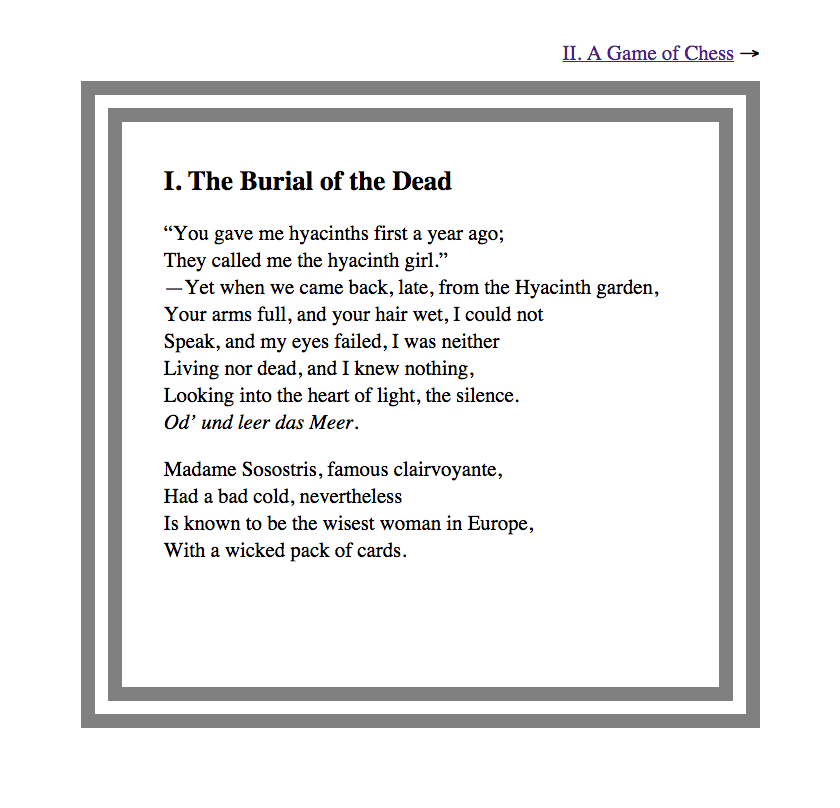

7 Third tutorial: Pollen markup & tag functions
Now you’re getting to the good stuff. In this tutorial, you’ll use Pollen to publish a multi-page article written in Pollen markup. You’ll learn about:
Adding tags & attributes with Pollen markup
Attaching behavior to tag functions
the "pollen.rkt" file
Using decode with Pollen markup
If you want the shortest possible introduction to Pollen, try the Quick tour.
7.1 Prerequisites
I’ll assume you’ve completed the second tutorial and that you understand the principles of Pollen authoring mode — creating source files, converting them to X-expressions, and then combining them with templates to make output files.
Because now it’s time to pick up the pace. You’ve learned how to do some handy things with Pollen. But we haven’t yet exploited the full fusion of writing environment and programming language. I promised you that The book is a program, right? So let’s do some programming.
7.2 Optional reading: Pollen markup vs. XML
You can skip this section if XML holds no interest. But Pollen markup evolved out of my attempt to come up with an alternative to XML that would be more usable for writing. So if you’re familiar with XML, the contrast may be helpful.
7.2.1 The XML problem
In the second tutorial, I argued that Markdown is a limiting format for authors. Why? Because Markdown is merely shorthand notation for HTML tags. As such, it has three problems: it’s not semantic, it only covers a limited subset of HTML tags, and it can’t be extended by an author.
These problems are partly limitations of HTML itself. And these limitations were meant to be cured by XML — the X stands for extensible. In principle, XML allows you to define whatever tags you like and use them in your document.
So why hasn’t XML taken over the world? In practice, XML promises more than it delivers. The reasons are apparent to any writer who’s attempted to use XML as an authoring format:
Verbose syntax. Unfortunately, XML relies on the same angle-bracket notation as HTML. If you think HTML source is hard to read, XML is worse. Since much of writing involves reading, this feature is also a major bug.
Validation overhead. Integral to XML is the concept of validation, which guarantees that a document meets certain formal criteria, usually defined in a schema. To get the full value from XML, you generally want to use validation. But doing so imposes a lot more work on you as an author, and removes much of the expressive potential of XML.
Masochistic document processing. I’m referring to XSLT, the preferred method of transforming XML documents. I know a little XSLT, so I’ll concede that there’s a method to its madness. But it’s still madness.
The nicest thing we could say about XML is that its intentions are good. It’s pointed toward the right goals. But its benefits are buried under atrocious ergonomics.
7.2.2 What Pollen markup does differently
Pollen markup can be seen as a way of reaping the benefits of XML without incurring the headaches. Like XML, Pollen markup allows you to freely tag your text. But unlike XML:
Simple syntax. Pollen markup follows the usual conventions of Pollen commands.
No structural validation. You can use any tags you want, in any order, and you needn’t define them ahead of time. Your document will still work.
Racket processing. Pollen markup tags can have behavior attached to them using Racket functions, either before you use them, or later.
7.2.3 “But I really need XML…”
You can have XML. There’s nothing wrong with using Pollen markup to generate XML files that can then be fed into an existing XML processing pipeline. In other words, using Pollen markup, you can treat XML as an output format rather than an input format.
In this tutorial, I’ll be rendering Pollen markup with an HTML template. But you could easily use the same workflow with an XML template and thus end up with XML files.
7.3 Writing with Pollen markup
Pollen markup is a free-form markup system that lets you add arbitrary tags and attributes to your text. By arbitrary, I mean that you needn’t constrain your tags to an existing specification (e.g., the tags permitted by HTML). You can — but that’s an option, not a requirement.
I like to think of Pollen markup as a way of capturing not just the text, but also my ideas about the text. Some of these are low-level ideas (“this text should be italicized”). Some are high-level ideas (“this text is the topic of the page”). Some are just notes to myself. In short, everything I know about the text becomes part of the text.
In so doing, Pollen markup becomes the source code of the book. Let’s try it out.
7.3.1 Creating a Pollen markup file
We’re going to use Pollen markup to make a source file that will ultimately become HTML. So consistent with the authoring-mode workflow we learned in the second tutorial, we’ll start with our desired output filename, "article.html", and then append the new Pollen markup suffix, which is ".pm".
In DrRacket, start a new file called "article.html.pm" like so (as usual, you can use any sample text you like):
Consistent with usual authoring-mode policy, when you run this file, you’ll get an X-expression that starts with root:
'(root "I want to attend RacketCon this year.")
Remember, even though the first line of the file is #lang pollen — same as the last tutorial — the new ".pm" suffix signals that Pollen should interpret the source as Pollen markup.
For instance, look what happens if you goof up and put Markdown source in a Pollen markup file, like so:
The Markdown syntax will be ignored, and pass through to the output:
'(root "I am **so** excited to attend __RacketCon__ this year.")
Restore the non-Markdown source, and let’s continue.
7.3.2 Tags & tag functions
Pollen markup uses the same Pollen command syntax that we first saw in Adding Pollen commands. Previously, we used this syntax to invoke functions like define and ->html. This consistency in syntax is deliberate, because Pollen markup is used to invoke a special kind of function called a tag function, which is a function that, by default, adds a tag to the text.
To see how this works, restore your "article.html.pm" file to its original state:
We can add any tag with Pollen markup, but for now, let’s start with an old favorite: em, which is used in HTML to add emphasis to text. We apply a tag by starting with the lozenge character (◊) followed by the tag name em, followed by the text in curly braces, like so:
Run this file in DrRacket and see the X-expression that results:
'(root "I want to attend " (em "RacketCon this year") ".")
You won’t be surprised to hear that you can nest tags within each other:
With the expected results:
'(root "I want to attend " (em "RacketCon " (strong "this") " year") ".")
7.3.3 Attributes
Attributes are like tags for tags. Each attribute is a key–value pair where the key is any name, and the value is a string. Anyone who’s seen HTML is familiar with them:
<span class="author">Prof. Leonard</span> |
Here, class is an attribute for span that has value "author". And this is what it looks like as an X-expression:
'(span ((class "author")) "Prof. Leonard")
You can add any number of attributes to a tag (first as HTML, then as an X-expression):
<span class="author" id="primary" living="true">Prof. Leonard</span> |
'(span ((class "author")(id "primary")(living "true")) "Prof. Leonard")
In Pollen markup, attributes have the same logic, but a slightly different syntax. In keeping with the tag notation you just saw, the span tag is added in the usual way:
Then you have two options for adding attributes. The verbose way corresponds to how the attributes appear in the X-expression:
Each key–value pair is in parentheses, and then the list of pairs is within parentheses, with a quote (') at the front that signals that the text should be used literally.
But this is boring to type out, so Pollen also allows you to specify attributes in tag functions with Racket-style keyword arguments:
In this form, each attribute name is prefixed with #:, indicating a keyword argument. As before, the attribute value is in quotation marks following the keyword name.
This keyword notation will work by default with any tag. When you’re making a custom tag function, use define-tag-function (rather than the usual define) if you want your tag function to support keyword notation the same way.
Both of these forms will produce the same X-expression:
'(span ((class "author")(id "primary")(living "true")) "Prof. Leonard")
Now that you know how to make tags and attributes, you might wonder whether Pollen markup can be used as a quick & dirty HTML-notation system. Sure — for a quick & dirty project, why not. Recall that X-expressions are just alternative notation for the standard angle-bracket notation used in HTML. So if you wanted HTML like this:
<div class="red" style="font-size:150%">Important <em>News</em></div> |
You could write it in Pollen markup like so:
◊div[#:class "red" #:style "font-size:150%"]{Important ◊em{News}}
And then convert it (using the ->html function) into the HTML above. Thus, the tags you already know (and love?) can be used in Pollen markup, but with fewer keystrokes and cruft.
Still, if Pollen markup were just an alternative notation system for HTML tags, it would be pretty boring. As I alluded above, that’s merely the simplest way to use it.
In the XML spirit, Pollen markup lets you use any tags you want. That’s considerably less boring.
7.3.4 Optional reading: What are custom tags good for?
XML jocks can skip this section, since you already know. But if you’ve been living in the Markdown / HTML lowlands, read on.
Tags, broadly speaking, are a means of annotating a text with extra information, which I’ll call metadata (using that term in its generic sense, not in any fiddly computery way). Metadata is the key tool that enables an author to write a book with the benefits of semantic markup and format independence.
7.3.4.1 Semantic markup
Semantic markup means adding metadata to text according to the meaning of the text, not merely its intended visual appearance. So rather than tagging RacketCon with an em tag, as we did above to indicate how the word should look, maybe we would tag it with an event tag, to indicate what kind of thing it is.
Semantic markup lets an author specify distinctions that would be ambiguous in pure visual terms, thereby capturing more meaning and intent. For instance, in books, italic styling is commonly applied to a number of unrelated types of information: emphasized words, movie titles, terms being used for the first time, headings, captions and labels, and so on. Under a non-semantic formatting scheme, perhaps one would tag them all em. But in semantic terms, one would tag them movie-title, first-use, heading, as appropriate.
This has two major benefits. First, by separating appearance and meaning, an author can manage the content of the book in useful ways. For instance, if every movie title were tagged as movie-title rather than italic, then it would be simple to generate a list of all movies mentioned in the book (for the author’s benefit) or a page index of movie references (for the reader’s benefit). But without that semantic tagging, a movie title couldn’t be distinguished from any other italicized text.
7.3.4.2 Format independence
The second benefit of custom tags is format independence, or the ability to change the rendering of the text to suit a particular device or context.
When a text is encrusted with format-specific visual tags — for instance, HTML tags — then the document markup is entangled with a single output format. If you only need one output format, fine.
But increasingly, book authors have been called upon to publish their work in multiple formats: paper and PDF, but also web, e-book, or other natively digital formats, that connect to devices with differing display capabilities.
Yes, I know that many of these formats are based on variants of HTML. But the HTML you can use in a desktop web browser is quite different from, say, the HTML you can use in a Kindle .mobi file. The .mobi file has other technical requirements too, like an .ncx and .opf file. So despite some genetic kinship, these HTML-ish formats are best understood as separate targets.
Using a display-driven model to manage this complexity is a terrible idea — as anyone who’s tried it can attest. Converting from one display-based file type to another — for instance, word processor to HTML, or HTML to PDF — is an exercise in frustration and drain-circling expectations.
This isn’t surprising. For a long time, text processing has been dominated by this display-driven model. Most word processors, like Microsoft Word and Pages, have been built around this model. It worked well enough in the era where most documents were eventually going to be printed on paper (or a paper simulator like PDF). HTML was a technical leap forward, but not a conceptual leap: it mostly represented the display options available in a web browser.
There’s a couple TeX fans at the back of the room, waving their arms. Yes, TeX got a lot of things right. In practice, however, it never became a core tool for electronic publishing (which, to be fair, didn’t exist when TeX was written). But plenty of ideas in Pollen have been lifted from TeX.
For a document to be format independent, two conditions have to be satisfied.
First, the document has to be readable by other programs, so they can handle the conversion of format-independent markup into a format-specific rendering (e.g., mapping semantic tags like movie-title onto visual tags like em). Most word-processor formats, like Word’s .docx, are bad for authoring because these formats are opaque and proprietary. We needn’t get into the political objections. As a practical matter, they’re inarguably restrictive — if you can’t get your data out of your file, you’re stuck.
Second, the document itself has to be represented in a way that’s independent of the particularities of any one format. For instance, HTML is a bad authoring format because it encourages authors to litter their text with HTML-isms like h1 and span. These have no meaning outside of HTML, and thus will always cause conversion problems. The same goes for Markdown, which is simply HTML in disguise.
The solution to the first condition is to use text-based markup rather than proprietary file types. The solution to the second condition is to let authors define custom tags for the document, rather than the other way around. Pollen markup incorporates both of these ideas.
7.3.5 Using custom tags
You can insert a custom tag using the same syntax as any other tag. Suppose you want to use an event tag to mark events. You would insert it like so:
This markup will turn into this X-expression:
'(root "I want to attend " (event "RacketCon") " this year.")
Which is equivalent to this HTML-ish markup:
<root>I want to attend <event>RacketCon</event> this year.</root> |
In truth, Pollen doesn’t notice the differences among a custom tag, a standard HTML tag, or any other kind of tag. They’re all just markup tags. If you want to restrict yourself to a certain vocabulary of tags, you can. If you want to set up Pollen to enforce those restrictions, you can do that too. But by default, Pollen doesn’t impose restrictions like this. In general, you can pick any tag name you want, and it will work.
Don’t take my word for it. See what happens when you write this and run it:
One small but important exception to this rule. If you were wondering why I sometimes call them tag functions instead of just tags, it’s because under the hood, every tag is implemented as a function. The default behavior of this function is just to wrap the text in a tag with the given name.
The benefit of treating tags as functions will become evident later in this tutorial. But the cost of this approach is that tags occupy the same namespace as the other functions available in Pollen (and by extension, Racket). Meaning, if you try to use a tag name that’s already being used for an existing function, you’ll get an error.
For instance, suppose we try to use a custom tag called length:
When we run this file, we get an error:
length: contract violation;
expected: list?
given: "77km"
The problem is that Racket already has a function called length. Consistent with the usual rules of Pollen command notation, your command is interpreted as an attempt to invoke the length function, rather than apply a tag named length.
In practice, namespace clashes are rare. But if necessary, they’re easy to work around (for the simplest method, see Invoking tag functions).
7.3.6 Choosing custom tags
You just saw that using custom tags is easy. Choosing custom tags, on the other hand, is less science than art. As the author, it’s up to you. Some guidelines:
You’re never doing it wrong. I wanted to make sure you knew the case for semantic markup. But if your life would be easier just using HTML tags directly, go ahead.
Tag iteratively. Don’t worry about getting all your tags right the first time through. Just as you write and then rewrite, add the tags that seem right now, and change or augment them later, because …
Tags emerge from writing. It’s hopeless to try to specify all your tags in advance. As you write, you’ll learn things about the text, which will suggest new tags.
The best tag system is the one you’ll stick with. Tags aren’t free. It takes effort to insert them consistently. Don’t bother with an overambitious tag scheme that bores you more than it helps.
For boilerplate, tags are faster than text. If you find yourself repeatedly formatting certain text in a certain way — for instance, lists and tables — extract the content and wrap it in a tag that encapsulates the boilerplate.
And most important:
Tags are functions. As I mentioned above, every tag has a function behind it that uses the content of the tag as input. The default tag function just outputs the tag and its content. But you can replace this with any kind of function. So in practice, you can offload a lot of labor to tags.
As we’ll see in the next section, this is where your book truly becomes programmable.
7.4 Tags are functions
Don’t skip this section! It explains an essential Pollen concept.
If you’ve used HTML or XML, tags are just tags: things you type into the document that look the same going out as they did going in. Tags can be used to select document elements or assign styling (via CSS). But they don’t have any deeper effect on the document content.
That’s not so in Pollen. Under the hood, Pollen is just an alternate way of writing code in the Racket programming language. And tags, instead of being inert markers, are actually functions.
I think most of you know what a function is, but just to be safe — in programming, a function is a chunk of code that accepts some input, processes it, and then returns a value. Asking a function to process some data is known as calling the function.
Leading us to the Three Golden Rules of Pollen Tags:
Every Pollen tag calls a function with the same name.
The input values for that function are the attributes and elements of the tag.
The whole tag — tag name, attributes, and elements — is replaced with the return value of the called function.
Corollary to rule #3: because a tag represents a single X-expression, a tag function must also return a single X-expression. If you want to return multiple elements, you have to wrap them in a single X-expression.
Corollary to the corollary: you can use Pollen’s special splicing operator (@) as the tag of your return value to hoist its elements into the containing X-expression.
You’ve already seen the simplest kind of function in a Pollen document: the default tag function, which emulates the behavior of standard markup tags.
Let’s revisit an earlier example, now with the help of the Golden Rules:
What happens when you run this source? Working from the inside out, Pollen calls the tag function strong with the input "this". The result is (strong "this"). Then Pollen calls the tag function em with the three input values "RacketCon " (strong "this") " year", which yields (em "RacketCon " (strong "this") " year"). Finally, Pollen calls the tag function root with everything in the document, resulting in:
'(root "I want to attend " (em "RacketCon " (strong "this") " year") ".")
7.4.1 Attaching behavior to tags
Sometimes this default behavior will suffice. But other times, you’ll want to change the behavior of a tag. Why? Here are some useful examples of what you, as an author, can do with custom tag functions:
Automatically detect cross-references and add hyperlinks.
Pull in data from an external source.
Generate tables, figures, and other fiddly layout objects.
Change content based on given conditions.
Automatically detect line breaks, paragraphs, and lists.
Insert boilerplate text.
Anything annoying or repetitive.
Mathematical computations.
… and anything else you like to do with a programming language.
How do you change the behavior of a tag? Two steps:
Write a new function.
Give it the name of the tag.
Once you do this, this new behavior will automatically be invoked when you use the tag.
For example, let’s redefine the strong tag in our example above to simply print "BOOM":
When you run this file, you indeed get:
'(root "I want to attend " (em "RacketCon " "BOOM" " year"))
How does this work? Let’s look at our new function definition. As usual, we start with the lozenge character (◊) to denote a Pollen command. Then we use define to introduce a function definition. The name of the function comes next, which needs to match our tag name, strong. The expression (strong word) means “the name of this function is strong, and it takes a single word as input, which we’ll refer to as word.” Finally we have the return value, which is "BOOM".
This example defines the function with a Racket-style command. In this simple case, you could also use a Pollen-style command, e.g., ◊define[(strong word)]{BOOM}. But in general, defining functions with Racket-style commands is more flexible.
Let’s run this file again, but go back to the Golden Rules to understand what happens. Working from the inside out:
Pollen calls the function strong with the input "this" — same as before. But this time, the result of the strong function is not the X-expression (strong "this"), but simply "BOOM".
Then Pollen calls the function em with the three input values "RacketCon " "BOOM" " year". Because em is still a default tag function, it yields the X-expression (em "RacketCon " "BOOM" " year").
Finally, Pollen calls the root function with everything in the document.
The result:
'(root "I want to attend " (em "RacketCon " "BOOM" " year"))
This example is contrived, of course. But the basic idea — defining a function with the name of a tag — is the foundation of programmability in Pollen. If you get this, and the Golden Rules, you get everything.
7.5 Intermission
That was a lot of heavy material. But it also covered the most essential idea in Pollen: that every tag is a function. Congratulations on making it this far.
Experienced programmers might want to take a detour through Programming Pollen to understand more about what’s possible with tag functions.
The good news is that the rest of this tutorial will feel more relaxed, as we put these new principles to work.
Sorry that this tutorial is longer than the others, but truly — this is the stuff that makes Pollen different. If you’re not feeling enthusiastic by now, you should bail out.
Otherwise, get ready to rock.
7.6 Organizing functions
In the tag-function examples so far, we’ve defined each function within the source file where we used it. This is fine for quick little functions that are specific to a particular file.
But more often, you’ll want to use functions available in existing code libraries, and store your own functions so they can be available to other source files.
For now, we’re just invoking functions from within a Pollen markup file. But as you’ll see in the fourth tutorial, any function can be called from any kind of Pollen source file.
7.6.1 Using Racket’s function libraries
Any function in Racket’s extensive libraries can be used by loading the library with the require command. This will make its functions and values available in the current source file with the usual Pollen command syntax. For instance, suppose we want to use the value pi and function sinh from racket/math:
#lang pollen ◊(require racket/math) π is close to ◊(number->string pi). The hyperbolic sine of π is close to ◊(number->string (sinh pi)).
The result:
'(root "Pi is close to " "3.141592653589793" "." "\n" "The hyperbolic sine of pi is close to " "11.548739357257748" ".")
One caveat — you’re still in a Pollen markup file, so the return value of whatever function you call has to produce a string or an X-expression, so it can be merged into the document. That’s why we have number->string wrapping the numerical values. (This is similar to the restriction introduced in the first tutorial where functions used in preprocessor files had to produce text.)
If your functions produce incompatible results, you’ll get an error. For instance, look what happens when we remove number->string from the example above.
This will produce an error in DrRacket:
pollen markup error: in '(root "Pi is close to " 3.141592653589793 "." "\n" "The hyperbolic sine of pi is close to " 11.548739357257748 "."), 3.141592653589793 is not a valid element (must be txexpr, string, symbol, XML char, or cdata)
This code would not, however, produce an error if it were being run as a Pollen preprocessor file, because the preprocessor automatically converts numbers to strings. If you’d like to verify this, change the suffix to .pp and run the file again.
7.6.2 Introducing "pollen.rkt"
Don’t skip this section! It explains an essential Pollen concept.
As you get more comfortable attaching behavior to tags using tag functions, you’ll likely want to create some functions that can be shared between multiple source files. The "pollen.rkt" file is a special file that is automatically imported by Pollen source files in the same directory (including subdirectories). So every function and value provided by "pollen.rkt" can be used in these Pollen files.
First, using "pollen.rkt" isn’t mandatory. Within a Pollen source file, you can always import functions and values with require (as seen in the previous section). "pollen.rkt" just makes it easier to propagate a set of common definitions to every Pollen source file in your project.
Second, notice from the ".rkt" suffix that "pollen.rkt" is a source file containing Racket code, not Pollen code. This is the default because while Pollen’s notation is more convenient for text-based source files, Racket’s notation is more convenient when you’re just dealing with code.
You can still use Pollen notation within a Racket source file. See pollen/mode.
Third, "pollen.rkt" always applies to Pollen source files in the same directory. But that’s the minimum scope for the file, not the maximum. Pollen source files nested in subdirectories will look for a "pollen.rkt" in their own directory first. But if they can’t find it, they’ll look in the parent directory, then the next parent directory, and so on. Thus, by default, a "pollen.rkt" in the root folder of a project will apply to all the source files in the project. But when you add a new "pollen.rkt" to a subdirectory, it will apply to all files in that subdirectory and below.
Though a subdirectory-specific "pollen.rkt" will supersede the one in the enclosing directory, you can still use (require "../pollen.rkt") to pull in definitions from above, and provide to propagate them into the current subdirectory. For instance, (provide (all-from-out "../pollen.rkt")) will re-export everything from the parent directory.
Let’s see how this works in practice. In the same directory as "article.html.pm", create a new "pollen.rkt" file as follows:
Here we use the define function (which we’ve seen before) to set author equal to "Trevor Goodchild". Note the final step: consistent with standard Racket rules, we have to explicitly provide the new value so that other files can see it (unlike Python, things you define in Racket are by default private, not public).
Then update good old "article.html.pm" to use our new author value:
Run this in DrRacket and you’ll get:
'(root "The author is " "Trevor Goodchild" ".")
Staying in the same directory, create a second Pollen source file:
Run this, and you’ll get:
'(root "The author is really " "Trevor Goodchild" "?")
That’s all there is to it. You see how the value provided by "pollen.rkt" is automatically available within both Pollen source files.
You can import functions, including tag functions, the same way. For instance, add a function for em:
We have a new bit of notation here. Notice that we defined our tag function as (em . elements) rather than (em word). The use of a dot before the last input argument makes it into a rest argument. This puts all the remaining input arguments — however many there are — into one list. In general, this is the best practice for tag functions, because you don’t usually know in advance how many elements will be passed to the function as input (for more about this, see The text body).
The txexpr function is a utility from the txexpr package (which is installed with Pollen). It builds a new X-expression from a tag, attribute list, and list of elements.
Then we use our new tag function in a source file:
With the expected results:
'(root "The " (extra-big "author") " is " (extra-big "Trevor Goodchild") ".")
By the way, if you just want to provide everything in "pollen.rkt", you can use the all-defined-out shorthand:
7.7 Decoding markup with a root tag function
As you’ve seen, the X-expression you get when you run a Pollen markup file always starts with a tag called root. You can attach a custom tag function to root the same way as any other tag — by creating a new function and calling it root.
For instance, you could do something simple, like change the name of the output X-expression:
Resulting in:
'(content "The " (code "root") " tag is now called " (code "content") ".")
Unlike other tags in your document, root contains the entire content of the document. So the function you attach to root can operate on everything.
For that reason, one of the most useful things you can do with a tag function attached to root is decoding the content of the page. By decoding, I mean any post-processing of content that happens after the tags within the page have been evaluated.
Decoding is a good way to automatically accomplish:
Detection of linebreaks, paragraphs, and list items based on whitespace.
Hyphenation.
Typographic optimizations, like smart quotes, dashes, and ligatures.
Gathering data for indexing or cross-referencing.
Any document enhancements a) that can be handled programmatically and b) that you’d prefer not to hard-code within your source files.
As an example, let’s take one of my favorites — linebreak and paragraph detection. In XML & HTML authoring, you have to insert every <br /> and <p> tag by hand. This is profoundly dull, clutters the source file, and makes editing a chore.
Instead, let’s make a decoder that allows us to denote a linebreak with a single newline in the source, and a paragraph break with a double newline. Here’s some sample content with single and double newlines:
Because we don’t yet have a decoder, these newlines just get passed through:
'(root "The first line of the 'first' paragraph." "\n" "And a new line." "\n" "\n" "The second paragraph --- isn't it great.")
When this X-expression is converted to HTML, the newlines will persist:
<root>The first line of the 'first' paragraph.\nAnd a new line.\n\nThe second paragraph --- isn't it great.</root> |
But in HTML, raw newlines are displayed as a single space. So if you view this file in the project server, you’ll see:
Not what we want.
So we need to make a decoder that will convert the newlines in our source into line breaks and paragraph breaks on the HTML output side. To do this, we use the decode-elements function, which provides hooks to process categories of content within the document.
Add a basic decode-elements to the source file like so:
Here, we’ll keep the tag name root, leave the attributes as empty, and pass through our decoded list of elements.
Racket jocks: you could also write this using quasiquote and unquote-splicing syntax as `(root ,@(decode-elements elements)). The txexpr package is just an alternate way of accomplishing the task.
If you run this file, what changes? Right — nothing. That’s because by default, decode-elements will let the content pass through unaltered.
We change this by giving decode-elements the name of a processing function and attaching it to the type of content we want to process. In this case, we’re in luck — the decode module already contains a decode-paragraphs function (that also detects linebreaks). We add this function using the keyword argument #:txexpr-elements-proc, which is short for “the function used to process the elements of a tagged X-expression”:
#lang pollen ◊(require pollen/decode txexpr) ◊(define (root . elements) (txexpr 'root empty (decode-elements elements #:txexpr-elements-proc decode-paragraphs))) The first line of the 'first' paragraph. And a new line. The second paragraph --- isn't it great.
Now, when we run the file, the X-expression has changed to include two p tags and a br tag:
'(root (p "The first line of the 'first' paragraph." (br) "And a new line.") (p "The second paragraph --- isn't it great."))
That means when we convert to HTML, we’ll get the tags we want:
<root><p>The first line of the 'first' paragraph.<br />And a new line.</p><p>The second paragraph --- isn't it great.</p></root> |
So when we view this in the project server, the linebreaks and paragraph breaks are displayed correctly:
And a new line.
The second paragraph --- isn't it great.
Of course, in practice you wouldn’t put your decoding function in a single source file. You’d make it available to all your source files by putting it in "pollen.rkt". So let’s do that now:
We’ll also restore the source of "article.html.pm" to its original, simplified state:
This time, "article.html.pm" will pull in the tag function for root from "pollen.rkt". Otherwise, the code hasn’t changed, so the result in the project server will be the same:
And a new line.
The second paragraph --- isn't it great.
But wait, those straight quotes look terrible. Also, three hyphens for an em dash? Barbaric.
Let’s upgrade our decoder to take of those. In pollen/misc/tutorial I’ve stashed the two functions we’ll need for the job: smart-quotes and smart-dashes.
This time, however, we’re going to attach them to another part of decode-elements. Smart-quote and smart-dash conversion only needs to look at the strings within the X-expression. So instead of attaching these functions to the #:txexpr-elements-proc argument of decode-elements, we’ll attach them to #:string-proc, which lets us specify a function to apply to strings:
#lang racket/base (require pollen/decode pollen/misc/tutorial txexpr) (provide root) (define (root . elements) (txexpr 'root empty (decode-elements elements #:txexpr-elements-proc decode-paragraphs #:string-proc (compose1 smart-quotes smart-dashes))))
Because #:string-proc only accepts one function (not two), we need to use compose1 to combine smart-quotes and smart-dashes into one function (compose1, from the Racket library, creates a new function that applies each function in its argument list, from right to left).
Now, if we run "article.html.pm" in DrRacket, we can see the effects of the new decoder functions. The quotes are curled, and the three hyphens become an em dash:
'(root (p "The first line of the ‘first’ paragraph." (br) "And a new line.") (p "The second paragraph—isn’t it great."))
And of course, this shows up in the project server too:
And a new line.
The second paragraph—isn’t it great.
By the way, decoding via the root tag is often most convenient, but you don’t have to do it that way. Decoding is just a special thing you can do inside any tag function. So you can make a decoder that only affects a certain tag on the page. Or you can make multiple decoders for different tags. The advantage of using a decoder with root is that it can affect all the content, and since it’s attached to the root node, it will always be the last tag function that gets called.
7.8 Putting it all together
For this final example, we’ll combine what we’ve learned in the first three tutorials. Though this project is still simple, it summarizes all the major concepts of Pollen.
It also provides a recipe you can adapt for your own projects, whether small or large. For instance, Butterick’s Practical Typography and Typography for Lawyers follow this core structure.
As we go through the ingredients, I’ll review the purpose of each. Save these files into a single project directory with the project server running.
7.8.1 The "pollen.rkt" file
This file provides functions that are automatically imported into Pollen source files in the same directory. It’s written in standard Racket. The "pollen.rkt" file is optional — without it, your tags will just be treated as default tag functions. But you’ll probably find it a convenient way to make tag functions available within your project, including a decode function attached to root.
Here, we’ll use the "pollen.rkt" we devised in the previous section to set up decoding for our source files:
#lang racket/base (require pollen/decode pollen/misc/tutorial txexpr) (provide root) (define (root . elements) (txexpr 'root empty (decode-elements elements #:txexpr-elements-proc decode-paragraphs #:string-proc (compose1 smart-quotes smart-dashes))))
7.8.2 The template
When you’re using Pollen authoring mode for your content — using either Markdown syntax, or Pollen markup — your source files will produce an X-expression. To convert this X-expression into a finished file, you need to use a template.
By default, when Pollen finds a source file called "filename.ext.pm" or "filename.ext.pmd", it will look for a template in your project directory called "template.ext", where ".ext" is the matching output extension.
In this project, we want to end up with HTML, so our source files will be called "filename.html.pm", and thus we need to make a "template.html". Let’s use a modified version of the one we made in the second tutorial. As we did then, let’s add the null extension to clearly indicate it’s an input file, so the whole name is "template.html.p":
<html> <head> <meta charset="UTF-8"> <title>◊select['h1 doc] by T. S. Eliot</title> <link rel="stylesheet" type="text/css" media="all" href="styles.css" /> </head> <body>◊(->html doc #:splice? #t) ◊(define prev-page (previous here)) ◊when/splice[prev-page]{ <div id="prev">← <a href="◊|prev-page|">◊(select 'h1 prev-page)</a></div>} ◊(define next-page (next here)) ◊when/splice[next-page]{ <div id="next"><a href="◊|next-page|">◊(select 'h1 next-page)</a> →</div>} </body> </html>
7.8.3 The pagetree
A pagetree defines sequential and hierarchical relationships among a set of output files. The pagetree is used by the template to calculate navigational links (e.g., previous, next, up, etc.) A pagetree is optional — if you don’t need navigation in your project, you don’t need a pagetree.
But in this project, we do want navigation. So we’ll add an "index.ptree" file like so:
7.8.4 A CSS stylesheet using the preprocessor
Our template file above refers to a CSS file called "styles.css". When resolving linked files, the project server makes no distinction between static and dynamic files. If there’s a static file called "styles.css", it will use that.
Or, if you make a preprocessor source file called "styles.css.pp", it will be dynamically rendered into the requested "styles.css" file. The preprocessor will operate on any file with the ".pp" extension — so a preprocessor source called "filename.ext.pp" will be rendered into "filename.ext". (The corollary is that preprocessor functionality can be added to any kind of text-based file.)
Preprocessor source files, like authoring source files, get access to everything in "pollen.rkt", so you can share common functions and variables.
Let’s use an improved version of the dynamic CSS file we made in the first tutorial.
#lang pollen ◊(define inner 2) ◊(define edge (* inner 2)) ◊(define color "gray") ◊(define multiplier 1.3) body { margin: ◊|edge|em; border: ◊|inner|em double ◊|color|; padding: ◊|inner|em; font-size: ◊|multiplier|em; line-height: ◊|multiplier|; } h1 { font-size: ◊|multiplier|em; } #prev, #next { position: fixed; top: ◊|(/ edge 2)|em; } #prev { left: ◊|edge|em; } #next { right: ◊|edge|em; }
7.8.5 The content source files using Pollen markup
With the scaffolding in place, we need the content. Our pagetree contains three output files — "burial.html", "chess.html", and "sermon.html". We’re going to make these output files using Pollen markup. So we’ll create three source files and name them by adding the ".pm" source extension to each of the output names — thus "burial.html.pm", "chess.html.pm", and "sermon.html.pm", as follows (and with apologies to T. S. Eliot):
#lang pollen ◊h1{I. The Burial of the Dead} "You gave me hyacinths first a year ago; They called me the hyacinth girl." --- Yet when we came back, late, from the Hyacinth garden, Your arms full, and your hair wet, I could not Speak, and my eyes failed, I was neither Living nor dead, and I knew nothing, Looking into the heart of light, the silence. ◊em{Od' und leer das Meer.} Madame Sosostris, famous clairvoyante, Had a bad cold, nevertheless Is known to be the wisest woman in Europe, With a wicked pack of cards.
#lang pollen ◊h1{II. A Game of Chess} And still she cried, and still the world pursues, "Jug Jug" to dirty ears. And other withered stumps of time Were told upon the walls; staring forms Leaned out, leaning, hushing the room enclosed. Footsteps shuffled on the stair, Under the firelight, under the brush, her hair Spread out in fiery points Glowed into words, then would be savagely still. "My nerves are bad to-night. Yes, bad. Stay with me. Speak to me. Why do you never speak? Speak. What are you thinking of? What thinking? What? I never know what you are thinking. Think."
#lang pollen ◊h1{III. The Fire Sermon} "Trams and dusty trees. Highbury bore me. Richmond and Kew Undid me. By Richmond I raised my knees Supine on the floor of a narrow canoe." "My feet are at Moorgate, and my heart Under my feet. After the event He wept. He promised 'a new start.' I made no comment. What should I resent?"
7.8.6 The result
Now visit the project server and view "burial.html", which should look something like this (the box will expand to fit your browser window):

Click the navigational links at the top to move between pages. I encourage you to change the source files, the style sheet, the template, or "pollen.rkt", and see how these changes immediately affect the page rendering in the project server. (You can also change the sequence of the pages in "index.ptree", but in that case, you’ll need to restart the project server to see the change.)
This page isn’t a miracle of web design. But it shows you in one example:
Pollen markup being decoded — paragraph breaks, linebreaks, smart quotes, smart dashes — with a decode function attached to the root node by "pollen.rkt".
A CSS file generated by the Pollen preprocessor that computes positions for CSS elements using numerical values set up with define, and mathematical conversions thereof.
Navigational links that appear and disappear as needed using conditional statements (when/splice) in "template.html.p", with the page sequence defined by "index.ptree" and the names of the links being pulled from the h1 tag of each source file using select.
7.9 Third tutorial complete
OK, that was a humongous tutorial. Congratulations on making it through.
But your reward is that you now understand all the core concepts of the Pollen publishing system, including the most important ones: the flexibility of Pollen markup, and the connection between tags and functions.